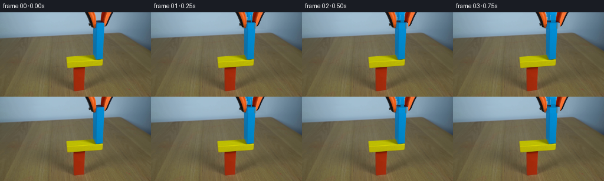
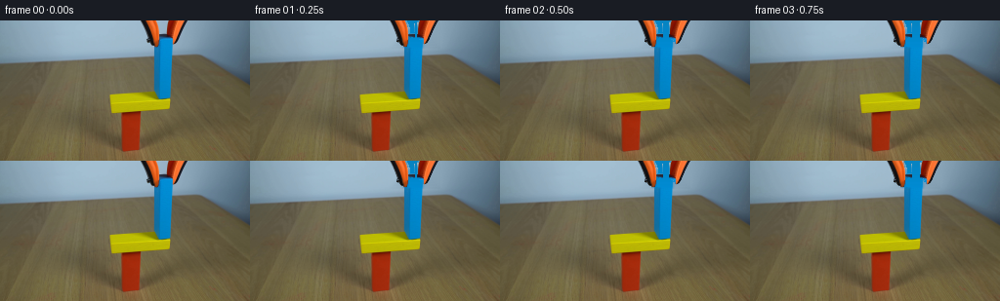
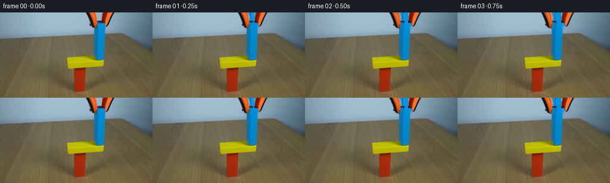
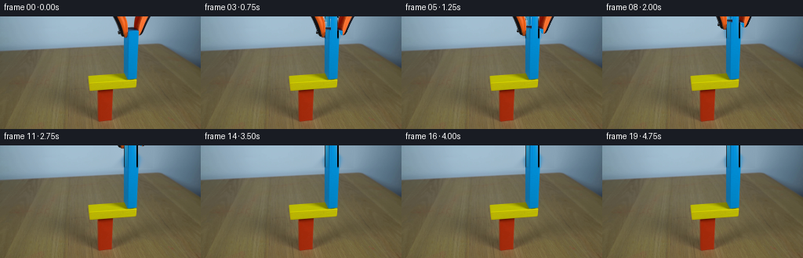
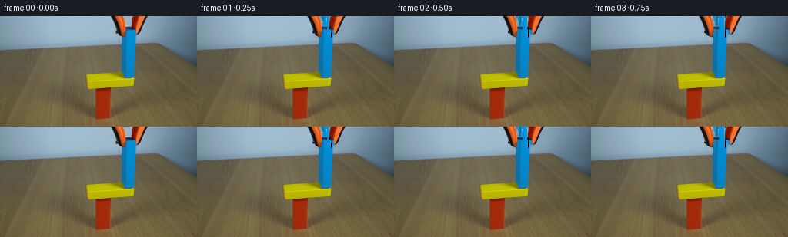
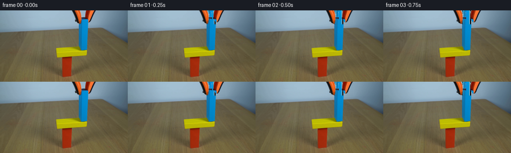
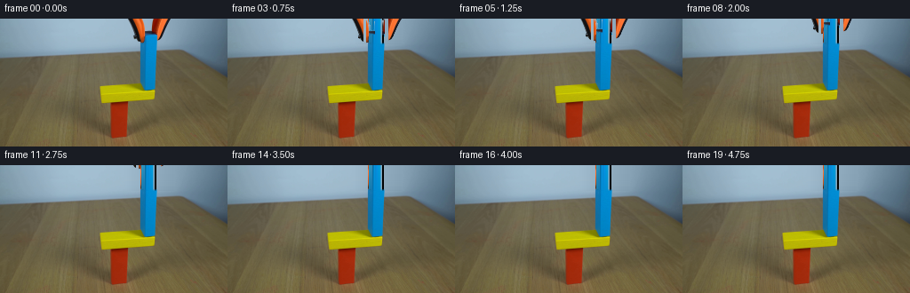
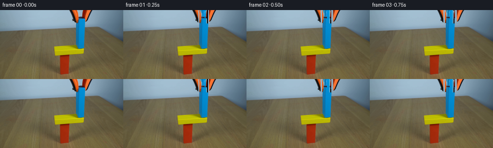
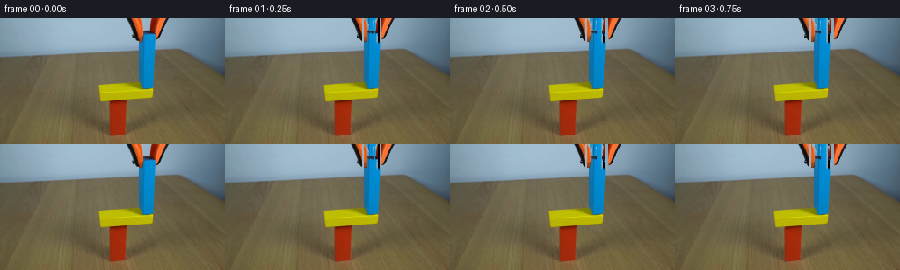
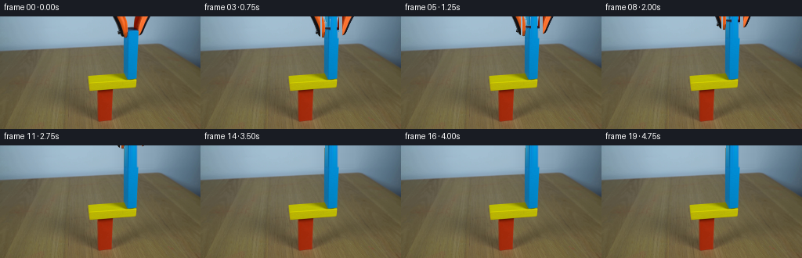

CODING AGENTS AS PIXEL WORLD MODELS
traex/DeepSeek-V4.1-Flash · 0182
点击播放 · 原生 RGB 像素
逐轮保存的候选
回放视频、检查图与代码变化。
每份候选均可单独播放。实际图片检查记录在下方工具轨迹中。
候选 01播放与检查图
点击播放 · 原生 RGB 像素

展开代码变化
--- 上一保存版本
+++ 本次保存版本
@@ -0,0 +1,197 @@
+"""Generate the fixed-camera block-placement continuation."""
+
+from pathlib import Path
+
+import cv2
+import numpy as np
+from PIL import Image
+from scipy.ndimage import binary_dilation, distance_transform_edt
+
+import artifact_io
+
+
+ROOT = Path(__file__).resolve().parent
+WIDTH, HEIGHT = 256, 144
+N_FRAMES = 20
+
+
+def _paste_rgba(dst, rgb, alpha, dx, dy):
+ """Composite an integer-translated RGBA sprite onto an RGB frame."""
+ shifted_rgb = np.zeros_like(dst)
+ shifted_alpha = np.zeros((HEIGHT, WIDTH), dtype=np.float32)
+
+ x0, x1 = max(0, dx), min(WIDTH, WIDTH + dx)
+ y0, y1 = max(0, dy), min(HEIGHT, HEIGHT + dy)
+ if x0 >= x1 or y0 >= y1:
+ return
+
+ sx0, sx1 = x0 - dx, x1 - dx
+ sy0, sy1 = y0 - dy, y1 - dy
+ shifted_rgb[y0:y1, x0:x1] = rgb[sy0:sy1, sx0:sx1]
+ shifted_alpha[y0:y1, x0:x1] = alpha[sy0:sy1, sx0:sx1]
+
+ a = shifted_alpha[..., None]
+ dst[:] = shifted_rgb * a + dst * (1.0 - a)
+
+
+def _keep_large_components(mask, minimum=8):
+ count, labels, stats, _ = cv2.connectedComponentsWithStats(
+ mask.astype(np.uint8), connectivity=8
+ )
+ kept = np.zeros_like(mask, dtype=bool)
+ for label in range(1, count):
+ if stats[label, cv2.CC_STAT_AREA] >= minimum:
+ kept |= labels == label
+ return kept
+
+
+def build_scene_layers(frame):
+ """Recover the tool-free background and a full blue-block top surface."""
+ image = frame.astype(np.float32)
+
+ # The tool and the top of the blue block occupy a compact region at the
+ # upper edge. Reconstruct that strip from its surrounding blurred backdrop.
+ strip_mask = np.zeros((HEIGHT, WIDTH), dtype=np.uint8)
+ strip_mask[0:29, 142:195] = 255
+ clean_plate = cv2.inpaint(
+ frame, strip_mask, 4.0, cv2.INPAINT_TELEA
+ ).astype(np.float32)
+
+ # Rebuild the blue block's top from lower, unobstructed rows. A per-row
+ # luminance correction keeps the original lighting gradient intact.
+ blue_left, blue_right = 157, 177
+ blue_patch = np.zeros((29, blue_right - blue_left, 3), dtype=np.float32)
+ for y in range(29):
+ source_y = min(55, 28 + y)
+ source = image[source_y, blue_left:blue_right].copy()
+ target_row = image[y, blue_left:blue_right]
+
+ # The left edge is hidden by a jaw near the top, so measure the visible
+ # interior columns when estimating the row's illumination.
+ visible = np.arange(blue_left, blue_right) >= 164
+ source_luma = source[visible].mean(axis=0) @ np.array(
+ [0.2126, 0.7152, 0.0722]
+ )
+ target_luma = target_row[visible].mean(axis=0) @ np.array(
+ [0.2126, 0.7152, 0.0722]
+ )
+ gain = np.clip(target_luma / max(source_luma, 1.0), 0.88, 1.12)
+ blue_patch[y] = np.clip(source * gain, 0, 255)
+
+ # Add a narrow overlap at the bottom to avoid a seam with the original
+ # blue block below the reconstructed strip.
+ blue_patch[27] = (
+ 0.65 * blue_patch[27]
+ + 0.35 * image[27, blue_left:blue_right]
+ )
+ blue_patch[28] = (
+ 0.25 * blue_patch[28]
+ + 0.75 * image[28, blue_left:blue_right]
+ )
+
+ scene_no_tool = clean_plate.copy()
+ scene_no_tool[0:29, blue_left:blue_right] = blue_patch
+
+ # Extract the saturated orange jaws and black grip pads.
+ hsv = cv2.cvtColor(frame, cv2.COLOR_RGB2HSV)
+ hue, saturation, value = cv2.split(hsv)
+ roi = np.zeros((HEIGHT, WIDTH), dtype=bool)
+ roi[0:29, 142:195] = True
+ orange = (
+ ((hue < 24) | (hue > 168))
+ & (saturation > 85)
+ & (value > 55)
+ & roi
+ )
+ black = (value < 82) & ((frame.max(axis=2) - frame.min(axis=2)) < 38) & roi
+ core = _keep_large_components(orange | black, minimum=9)
+
+ # Estimate an antialiased matte against the reconstructed scene. This
+ # preserves the soft original edges when the jaws move.
+ candidate = binary_dilation(core, iterations=2)
+ _, nearest = distance_transform_edt(~core, return_indices=True)
+ nearest_y, nearest_x = nearest
+ foreground = image[nearest_y, nearest_x]
+ background = scene_no_tool
+
+ color_delta = image - background
+ foreground_delta = foreground - background
+ denominator = np.sum(foreground_delta * foreground_delta, axis=2)
+ alpha = np.sum(color_delta * foreground_delta, axis=2) / np.maximum(
+ denominator, 1.0
+ )
+ alpha = np.clip(alpha, 0.0, 1.0)
+ alpha[core] = 1.0
+ alpha[~candidate] = 0.0
+ alpha[alpha < 0.055] = 0.0
+
+ yy, xx = np.mgrid[0:HEIGHT, 0:WIDTH]
+ left_alpha = alpha * (xx < 170)
+ right_alpha = alpha * (xx >= 170)
+
+ return scene_no_tool, image, left_alpha, right_alpha
+
+
+def render(frame, scene_no_tool, tool_rgb, left_alpha, right_alpha, dx_l, dx_r, dy):
+ out = scene_no_tool.copy()
+ _paste_rgba(out, tool_rgb, left_alpha, dx_l, dy)
+ _paste_rgba(out, tool_rgb, right_alpha, dx_r, dy)
+ return np.clip(out, 0, 255).astype(np.uint8)
+
+
+def main():
+ first = np.asarray(Image.open(ROOT / "first_frame.png").convert("RGB"))
+ scene_no_tool, tool_rgb, left_alpha, right_alpha = build_scene_layers(first)
+
+ Image.fromarray(np.clip(scene_no_tool, 0, 255).astype(np.uint8)).save(
+ ROOT / ".tmp" / "clean_plate.png"
+ )
+
+ # Hold the grip, release it, then lift the jaws out of the fixed shot.
+ poses = [
+ (0, 0, 0),
+ (-1, 1, 0),
+ (-3, 3, 0),
+ (-4, 4, 0),
+ (-4, 4, 0),
+ (-4, 4, -2),
+ (-4, 4, -4),
+ (-4, 4, -7),
+ (-4, 4, -10),
+ (-4, 4, -14),
+ (-4, 4, -18),
+ (-4, 4, -23),
+ (-4, 4, -28),
+ (-4, 4, -34),
+ (-4, 4, -42),
+ (-4, 4, -52),
+ (-4, 4, -64),
+ (-4, 4, -78),
+ (-4, 4, -94),
+ (-4, 4, -112),
+ ]
+
+ frames = [first.copy()]
+ for dx_l, dx_r, dy in poses[1:]:
+ frames.append(
+ render(
+ first,
+ scene_no_tool,
+ tool_rgb,
+ left_alpha,
+ right_alpha,
+ dx_l,
+ dx_r,
+ dy,
+ )
+ )
+
+ frames = np.stack(frames, axis=0)
+ assert frames.shape == (N_FRAMES, HEIGHT, WIDTH, 3)
+ assert frames.dtype == np.uint8
+ assert np.array_equal(frames[0], first)
+ artifact_io.save(frames, ROOT)
+
+
+if __name__ == "__main__":
+ main()
候选 02播放与检查图
点击播放 · 原生 RGB 像素

展开代码变化
--- 上一保存版本
+++ 本次保存版本
@@ -5,7 +5,7 @@
import cv2
import numpy as np
from PIL import Image
-from scipy.ndimage import binary_dilation, distance_transform_edt
+from scipy.ndimage import binary_dilation, binary_fill_holes, distance_transform_edt
import artifact_io
@@ -57,26 +57,20 @@
frame, strip_mask, 4.0, cv2.INPAINT_TELEA
).astype(np.float32)
- # Rebuild the blue block's top from lower, unobstructed rows. A per-row
- # luminance correction keeps the original lighting gradient intact.
+ # Rebuild the blue block's top from lower, unobstructed rows. The block is
+ # nearly fronto-parallel, so a vertical profile fit avoids copying texture
+ # from the jaw and preserves the original light falloff.
blue_left, blue_right = 157, 177
blue_patch = np.zeros((29, blue_right - blue_left, 3), dtype=np.float32)
+ profile_rows = np.r_[30:73]
+ profile_x = np.arange(164, 176)
+ profile = image[np.ix_(profile_rows, profile_x)].mean(axis=1)
for y in range(29):
- source_y = min(55, 28 + y)
- source = image[source_y, blue_left:blue_right].copy()
- target_row = image[y, blue_left:blue_right]
-
- # The left edge is hidden by a jaw near the top, so measure the visible
- # interior columns when estimating the row's illumination.
- visible = np.arange(blue_left, blue_right) >= 164
- source_luma = source[visible].mean(axis=0) @ np.array(
- [0.2126, 0.7152, 0.0722]
- )
- target_luma = target_row[visible].mean(axis=0) @ np.array(
- [0.2126, 0.7152, 0.0722]
- )
- gain = np.clip(target_luma / max(source_luma, 1.0), 0.88, 1.12)
- blue_patch[y] = np.clip(source * gain, 0, 255)
+ source = profile[min(profile.shape[0] - 1, max(0, 29 - y))]
+ blue_patch[y] = np.clip(source, 0, 255)
+ for y in range(29):
+ blue_patch[y, 0] = 0.35 * blue_patch[y, 0] + 0.65 * image[y, 157]
+ blue_patch[y, -1] = 0.65 * blue_patch[y, -1] + 0.35 * image[y, 176]
# Add a narrow overlap at the bottom to avoid a seam with the original
# blue block below the reconstructed strip.
@@ -104,7 +98,26 @@
& roi
)
black = (value < 82) & ((frame.max(axis=2) - frame.min(axis=2)) < 38) & roi
- core = _keep_large_components(orange | black, minimum=9)
+ orange = _keep_large_components(orange, minimum=20)
+
+ # Fill the narrow seams between each jaw and its black grip pads. The
+ # convex hulls are stable, compact silhouettes in this top strip.
+ contours, _ = cv2.findContours(
+ orange.astype(np.uint8), cv2.RETR_EXTERNAL, cv2.CHAIN_APPROX_SIMPLE
+ )
+ jaw_mask_u8 = np.zeros((HEIGHT, WIDTH), dtype=np.uint8)
+ for contour in contours:
+ if cv2.contourArea(contour) < 25:
+ continue
+ hull = cv2.convexHull(contour)
+ cv2.drawContours(jaw_mask_u8, [hull], -1, 1, thickness=cv2.FILLED)
+ jaw_mask = jaw_mask_u8.astype(bool)
+
+ # The pads meet the jaw along one edge; include only black pixels directly
+ # adjacent to the hull, excluding the blue block and backdrop.
+ pads = black & binary_dilation(jaw_mask, iterations=3)
+ core = _keep_large_components(jaw_mask | pads, minimum=12)
+ core = binary_fill_holes(core)
# Estimate an antialiased matte against the reconstructed scene. This
# preserves the soft original edges when the jaws move.
@@ -123,7 +136,7 @@
alpha = np.clip(alpha, 0.0, 1.0)
alpha[core] = 1.0
alpha[~candidate] = 0.0
- alpha[alpha < 0.055] = 0.0
+ alpha[alpha < 0.16] = 0.0
yy, xx = np.mgrid[0:HEIGHT, 0:WIDTH]
left_alpha = alpha * (xx < 170)
候选 03播放与检查图
点击播放 · 原生 RGB 像素

展开代码变化
--- 上一保存版本
+++ 本次保存版本
@@ -57,17 +57,22 @@
frame, strip_mask, 4.0, cv2.INPAINT_TELEA
).astype(np.float32)
- # Rebuild the blue block's top from lower, unobstructed rows. The block is
- # nearly fronto-parallel, so a vertical profile fit avoids copying texture
- # from the jaw and preserves the original light falloff.
+ # Rebuild the blue block's top from lower, unobstructed rows. Quadratic
+ # extrapolation follows the smooth directional light across the face.
blue_left, blue_right = 157, 177
blue_patch = np.zeros((29, blue_right - blue_left, 3), dtype=np.float32)
- profile_rows = np.r_[30:73]
- profile_x = np.arange(164, 176)
- profile = image[np.ix_(profile_rows, profile_x)].mean(axis=1)
- for y in range(29):
- source = profile[min(profile.shape[0] - 1, max(0, 29 - y))]
- blue_patch[y] = np.clip(source, 0, 255)
+ fit_rows = np.arange(30, 73)
+ for x in range(158, 176):
+ column = image[fit_rows, x]
+ coefficients = np.polyfit(fit_rows, column, 2)
+ prediction = np.stack(
+ [np.polyval(coefficients[:, channel], np.arange(29)) for channel in range(3)],
+ axis=1,
+ )
+ blue_patch[:, x - blue_left] = np.clip(prediction, 0, 255)
+ # Keep the measured silhouette edge instead of extrapolating its antialiasing.
+ blue_patch[:, 0] = image[np.arange(29), 157]
+ blue_patch[:, -1] = image[np.arange(29), 176]
for y in range(29):
blue_patch[y, 0] = 0.35 * blue_patch[y, 0] + 0.65 * image[y, 157]
blue_patch[y, -1] = 0.65 * blue_patch[y, -1] + 0.35 * image[y, 176]
候选 04播放与检查图
点击播放 · 原生 RGB 像素
展开代码变化
--- 上一保存版本
+++ 本次保存版本
@@ -61,8 +61,8 @@
# extrapolation follows the smooth directional light across the face.
blue_left, blue_right = 157, 177
blue_patch = np.zeros((29, blue_right - blue_left, 3), dtype=np.float32)
- fit_rows = np.arange(30, 73)
- for x in range(158, 176):
+ fit_rows = np.arange(37, 73)
+ for x in range(159, 176):
column = image[fit_rows, x]
coefficients = np.polyfit(fit_rows, column, 2)
prediction = np.stack(
@@ -72,6 +72,7 @@
blue_patch[:, x - blue_left] = np.clip(prediction, 0, 255)
# Keep the measured silhouette edge instead of extrapolating its antialiasing.
blue_patch[:, 0] = image[np.arange(29), 157]
+ blue_patch[:, 1] = 0.58 * blue_patch[:, 1] + 0.42 * image[np.arange(29), 158]
blue_patch[:, -1] = image[np.arange(29), 176]
for y in range(29):
blue_patch[y, 0] = 0.35 * blue_patch[y, 0] + 0.65 * image[y, 157]
候选 05播放与检查图
点击播放 · 原生 RGB 像素

展开代码变化
--- 上一保存版本
+++ 本次保存版本
@@ -62,7 +62,7 @@
blue_left, blue_right = 157, 177
blue_patch = np.zeros((29, blue_right - blue_left, 3), dtype=np.float32)
fit_rows = np.arange(37, 73)
- for x in range(159, 176):
+ for x in range(159, 174):
column = image[fit_rows, x]
coefficients = np.polyfit(fit_rows, column, 2)
prediction = np.stack(
@@ -70,13 +70,30 @@
axis=1,
)
blue_patch[:, x - blue_left] = np.clip(prediction, 0, 255)
- # Keep the measured silhouette edge instead of extrapolating its antialiasing.
- blue_patch[:, 0] = image[np.arange(29), 157]
- blue_patch[:, 1] = 0.58 * blue_patch[:, 1] + 0.42 * image[np.arange(29), 158]
- blue_patch[:, -1] = image[np.arange(29), 176]
- for y in range(29):
- blue_patch[y, 0] = 0.35 * blue_patch[y, 0] + 0.65 * image[y, 157]
- blue_patch[y, -1] = 0.65 * blue_patch[y, -1] + 0.35 * image[y, 176]
+
+ # The right silhouette leans slightly inward toward the bottom. Fit its
+ # unobstructed upper-middle section, then feather it into the backdrop.
+ edge_rows = np.arange(37, 62)
+ edge_coefficients = np.polyfit(edge_rows, image[edge_rows, 174], 2)
+ edge_profile = np.stack(
+ [
+ np.polyval(edge_coefficients[:, channel], np.arange(29))
+ for channel in range(3)
+ ],
+ axis=1,
+ )
+ blue_patch[:, 14] = np.clip(edge_profile, 0, 255)
+ blue_patch[:, 15] = np.clip(edge_profile, 0, 255)
+ blue_patch[:, 16] = 0.82 * np.clip(edge_profile, 0, 255) + 0.18 * clean_plate[
+ :29, 175
+ ]
+
+ # Both silhouette columns are antialiased against the cool backdrop. The
+ # source pixels at the very top are tool-occluded, so use the reconstructed
+ # plate rather than copying them through.
+ blue_patch[:, 0] = clean_plate[:29, 157]
+ blue_patch[:, 1] = 0.68 * blue_patch[:, 1] + 0.32 * clean_plate[:29, 158]
+ blue_patch[:, -1] = clean_plate[:29, 176]
# Add a narrow overlap at the bottom to avoid a seam with the original
# blue block below the reconstructed strip.
候选 06播放与检查图
点击播放 · 原生 RGB 像素

展开代码变化
--- 上一保存版本
+++ 本次保存版本
@@ -72,9 +72,9 @@
blue_patch[:, x - blue_left] = np.clip(prediction, 0, 255)
# The right silhouette leans slightly inward toward the bottom. Fit its
- # unobstructed upper-middle section, then feather it into the backdrop.
- edge_rows = np.arange(37, 62)
- edge_coefficients = np.polyfit(edge_rows, image[edge_rows, 174], 2)
+ # unobstructed lower-middle section, then feather it into the backdrop.
+ edge_rows = np.arange(38, 62)
+ edge_coefficients = np.polyfit(edge_rows, image[edge_rows, 173], 2)
edge_profile = np.stack(
[
np.polyval(edge_coefficients[:, channel], np.arange(29))
@@ -82,9 +82,9 @@
],
axis=1,
)
- blue_patch[:, 14] = np.clip(edge_profile, 0, 255)
- blue_patch[:, 15] = np.clip(edge_profile, 0, 255)
- blue_patch[:, 16] = 0.82 * np.clip(edge_profile, 0, 255) + 0.18 * clean_plate[
+ blue_patch[:, 14] = 0.62 * np.clip(edge_profile, 0, 255) + 0.38 * blue_patch[:, 13]
+ blue_patch[:, 15] = 0.35 * np.clip(edge_profile, 0, 255) + 0.65 * blue_patch[:, 13]
+ blue_patch[:, 16] = 0.14 * np.clip(edge_profile, 0, 255) + 0.86 * clean_plate[
:29, 175
]
候选 07播放与检查图
点击播放 · 原生 RGB 像素
展开代码变化
--- 上一保存版本
+++ 本次保存版本
@@ -49,13 +49,13 @@
"""Recover the tool-free background and a full blue-block top surface."""
image = frame.astype(np.float32)
- # The tool and the top of the blue block occupy a compact region at the
- # upper edge. Reconstruct that strip from its surrounding blurred backdrop.
- strip_mask = np.zeros((HEIGHT, WIDTH), dtype=np.uint8)
- strip_mask[0:29, 142:195] = 255
- clean_plate = cv2.inpaint(
- frame, strip_mask, 4.0, cv2.INPAINT_TELEA
- ).astype(np.float32)
+ # The backdrop is a smooth studio gradient. Rebuild the occluded top strip
+ # by interpolating between unobstructed columns on each row.
+ clean_plate = image.copy()
+ left_anchor = image[:29, 141:142]
+ right_anchor = image[:29, 196:197]
+ weights = np.linspace(0.0, 1.0, 54, dtype=np.float32)[None, :, None]
+ clean_plate[:29, 142:196] = left_anchor * (1.0 - weights) + right_anchor * weights
# Rebuild the blue block's top from lower, unobstructed rows. Quadratic
# extrapolation follows the smooth directional light across the face.
@@ -71,28 +71,16 @@
)
blue_patch[:, x - blue_left] = np.clip(prediction, 0, 255)
- # The right silhouette leans slightly inward toward the bottom. Fit its
- # unobstructed lower-middle section, then feather it into the backdrop.
- edge_rows = np.arange(38, 62)
- edge_coefficients = np.polyfit(edge_rows, image[edge_rows, 173], 2)
- edge_profile = np.stack(
- [
- np.polyval(edge_coefficients[:, channel], np.arange(29))
- for channel in range(3)
- ],
- axis=1,
- )
- blue_patch[:, 14] = 0.62 * np.clip(edge_profile, 0, 255) + 0.38 * blue_patch[:, 13]
- blue_patch[:, 15] = 0.35 * np.clip(edge_profile, 0, 255) + 0.65 * blue_patch[:, 13]
- blue_patch[:, 16] = 0.14 * np.clip(edge_profile, 0, 255) + 0.86 * clean_plate[
- :29, 175
- ]
+ # Continue the fitted face through its antialiased right silhouette.
+ blue_patch[:, 14] = blue_patch[:, 13]
+ blue_patch[:, 15] = 0.42 * blue_patch[:, 13] + 0.58 * clean_plate[:29, 174]
+ blue_patch[:, 16] = 0.10 * blue_patch[:, 13] + 0.90 * clean_plate[:29, 175]
# Both silhouette columns are antialiased against the cool backdrop. The
# source pixels at the very top are tool-occluded, so use the reconstructed
# plate rather than copying them through.
blue_patch[:, 0] = clean_plate[:29, 157]
- blue_patch[:, 1] = 0.68 * blue_patch[:, 1] + 0.32 * clean_plate[:29, 158]
+ blue_patch[:, 1] = 0.82 * blue_patch[:, 1] + 0.18 * clean_plate[:29, 158]
blue_patch[:, -1] = clean_plate[:29, 176]
# Add a narrow overlap at the bottom to avoid a seam with the original
候选 08播放与检查图
点击播放 · 原生 RGB 像素


展开代码变化
--- 上一保存版本
+++ 本次保存版本
@@ -93,6 +93,8 @@
0.25 * blue_patch[28]
+ 0.75 * image[28, blue_left:blue_right]
)
+ # Preserve the dark block side and its narrow cast shadow.
+ blue_patch[:, 1] = image[np.arange(29), 158]
scene_no_tool = clean_plate.copy()
scene_no_tool[0:29, blue_left:blue_right] = blue_patch
@@ -148,6 +150,8 @@
alpha[core] = 1.0
alpha[~candidate] = 0.0
alpha[alpha < 0.16] = 0.0
+ alpha[:, 157:160] = 0.0
+ alpha[:, 173:177] = 0.0
yy, xx = np.mgrid[0:HEIGHT, 0:WIDTH]
left_alpha = alpha * (xx < 170)
候选 09播放与检查图
点击播放 · 原生 RGB 像素

展开代码变化
代码未变化；重新保存了产物。
候选 10播放与检查图
点击播放 · 原生 RGB 像素


展开代码变化
--- 上一保存版本
+++ 本次保存版本
@@ -96,8 +96,12 @@
# Preserve the dark block side and its narrow cast shadow.
blue_patch[:, 1] = image[np.arange(29), 158]
+ # Use the unobstructed rows below the jaws as the source for the block's
+ # side pixels; at the very top, only the backdrop remains visible.
scene_no_tool = clean_plate.copy()
scene_no_tool[0:29, blue_left:blue_right] = blue_patch
+ scene_no_tool[0:3, 157] = clean_plate[0:3, 157]
+ scene_no_tool[0:3, 158] = clean_plate[0:3, 158]
# Extract the saturated orange jaws and black grip pads.
hsv = cv2.cvtColor(frame, cv2.COLOR_RGB2HSV)
@@ -150,7 +154,7 @@
alpha[core] = 1.0
alpha[~candidate] = 0.0
alpha[alpha < 0.16] = 0.0
- alpha[:, 157:160] = 0.0
+ alpha[:, 157:159] = 0.0
alpha[:, 173:177] = 0.0
yy, xx = np.mgrid[0:HEIGHT, 0:WIDTH]
候选 12播放与检查图
点击播放 · 原生 RGB 像素

展开代码变化
--- 上一保存版本
+++ 本次保存版本
@@ -62,7 +62,7 @@
blue_left, blue_right = 157, 177
blue_patch = np.zeros((29, blue_right - blue_left, 3), dtype=np.float32)
fit_rows = np.arange(37, 73)
- for x in range(159, 174):
+ for x in range(158, 174):
column = image[fit_rows, x]
coefficients = np.polyfit(fit_rows, column, 2)
prediction = np.stack(
@@ -72,15 +72,27 @@
blue_patch[:, x - blue_left] = np.clip(prediction, 0, 255)
# Continue the fitted face through its antialiased right silhouette.
+ right_rows = np.arange(37, 59)
+ right_column = image[right_rows, 174]
+ right_coefficients = np.polyfit(right_rows, right_column, 2)
+ right_prediction = np.stack(
+ [
+ np.polyval(right_coefficients[:, channel], np.arange(29))
+ for channel in range(3)
+ ],
+ axis=1,
+ )
blue_patch[:, 14] = blue_patch[:, 13]
- blue_patch[:, 15] = 0.42 * blue_patch[:, 13] + 0.58 * clean_plate[:29, 174]
- blue_patch[:, 16] = 0.10 * blue_patch[:, 13] + 0.90 * clean_plate[:29, 175]
+ blue_patch[:, 15] = blue_patch[:, 13]
+ blue_patch[:, 16] = np.clip(right_prediction, 0, 255)
+ blue_patch[:, 17] = 0.58 * np.clip(right_prediction, 0, 255) + 0.42 * clean_plate[
+ :29, 175
+ ]
# Both silhouette columns are antialiased against the cool backdrop. The
# source pixels at the very top are tool-occluded, so use the reconstructed
# plate rather than copying them through.
blue_patch[:, 0] = clean_plate[:29, 157]
- blue_patch[:, 1] = 0.82 * blue_patch[:, 1] + 0.18 * clean_plate[:29, 158]
blue_patch[:, -1] = clean_plate[:29, 176]
# Add a narrow overlap at the bottom to avoid a seam with the original
@@ -93,9 +105,6 @@
0.25 * blue_patch[28]
+ 0.75 * image[28, blue_left:blue_right]
)
- # Preserve the dark block side and its narrow cast shadow.
- blue_patch[:, 1] = image[np.arange(29), 158]
-
# Use the unobstructed rows below the jaws as the source for the block's
# side pixels; at the very top, only the backdrop remains visible.
scene_no_tool = clean_plate.copy()
候选 13播放与检查图
候选 14播放与检查图
点击播放 · 原生 RGB 像素
展开代码变化
--- 上一保存版本
+++ 本次保存版本
@@ -93,7 +93,7 @@
# source pixels at the very top are tool-occluded, so use the reconstructed
# plate rather than copying them through.
blue_patch[:, 0] = clean_plate[:29, 157]
- blue_patch[:, -1] = clean_plate[:29, 176]
+ blue_patch[:, -1] = 0.42 * clean_plate[:29, 176] + 0.58 * clean_plate[:29, 177]
# Add a narrow overlap at the bottom to avoid a seam with the original
# blue block below the reconstructed strip.
候选 15播放与检查图
点击播放 · 原生 RGB 像素

展开代码变化
--- 上一保存版本
+++ 本次保存版本
@@ -85,14 +85,17 @@
blue_patch[:, 14] = blue_patch[:, 13]
blue_patch[:, 15] = blue_patch[:, 13]
blue_patch[:, 16] = np.clip(right_prediction, 0, 255)
- blue_patch[:, 17] = 0.58 * np.clip(right_prediction, 0, 255) + 0.42 * clean_plate[
- :29, 175
- ]
# Both silhouette columns are antialiased against the cool backdrop. The
# source pixels at the very top are tool-occluded, so use the reconstructed
# plate rather than copying them through.
blue_patch[:, 0] = clean_plate[:29, 157]
+ blue_patch[:, 17] = 0.76 * np.clip(right_prediction, 0, 255) + 0.24 * clean_plate[
+ :29, 175
+ ]
+ blue_patch[:, 18] = 0.18 * np.clip(right_prediction, 0, 255) + 0.82 * clean_plate[
+ :29, 176
+ ]
blue_patch[:, -1] = 0.42 * clean_plate[:29, 176] + 0.58 * clean_plate[:29, 177]
# Add a narrow overlap at the bottom to avoid a seam with the original
候选 16播放与检查图
点击播放 · 原生 RGB 像素

展开代码变化
代码未变化；重新保存了产物。
候选 17播放与检查图
点击播放 · 原生 RGB 像素

展开代码变化
--- 上一保存版本
+++ 本次保存版本
@@ -197,22 +197,22 @@
(-1, 1, 0),
(-3, 3, 0),
(-4, 4, 0),
- (-4, 4, 0),
+ (-4, 4, -1),
(-4, 4, -2),
(-4, 4, -4),
- (-4, 4, -7),
+ (-4, 4, -6),
+ (-4, 4, -8),
(-4, 4, -10),
+ (-4, 4, -12),
(-4, 4, -14),
+ (-4, 4, -16),
(-4, 4, -18),
- (-4, 4, -23),
+ (-4, 4, -20),
+ (-4, 4, -22),
+ (-4, 4, -24),
+ (-4, 4, -26),
(-4, 4, -28),
- (-4, 4, -34),
- (-4, 4, -42),
- (-4, 4, -52),
- (-4, 4, -64),
- (-4, 4, -78),
- (-4, 4, -94),
- (-4, 4, -112),
+ (-4, 4, -30),
]
frames = [first.copy()]
候选 18播放与检查图
可观测工具轨迹
实际执行的命令与返回图片。
命令 1exit 0
/bin/bash -c "pwd && rg --files -g '"'!**/.git/**'"' | sort"
命令 2exit 0
/bin/bash -c "sed -n '1,240p' prompt.txt"
命令 3exit 0
/bin/bash -c "sed -n '1,280p' GENERATION_RULES.md"
命令 4exit 0
/bin/bash -c 'file first_frame.png && identify first_frame.png 2>/dev/null || true && ls -lah'
命令 5exit 0
/bin/bash -c "sed -n '1,240p' artifact_io.py"
命令 6exit 0
/bin/bash -c "sed -n '1,240p' player_template.html"
命令 7exit 0
/bin/bash -c "python - <<'PY'
from PIL import Image
import numpy as np
im=Image.open('first_frame.png')
print(im.mode, im.size)
a=np.array(im.convert('RGB'))
print('dtype',a.dtype,'shape',a.shape,'minmax',a.min(),a.max(),'mean',a.mean(axis=(0,1)))
# top colors
c,n=np.unique(a.reshape(-1,3),axis=0,return_counts=True)
idx=np.argsort(n)[-30:][::-1]
for i in idx: print(tuple(c[i]),int(n[i]))
PY"命令 8exit 0
/bin/bash -c "python - <<'PY'
from PIL import Image
import numpy as np
im=np.array(Image.open('first_frame.png').convert('RGB'))
# block means 4x4 => 64x36
h,w,_=im.shape
for y0 in range(0,h,4):
row=[]
for x0 in range(0,w,4):
b=im[y0:y0+4,x0:x0+4].reshape(-1,3)
r,g,bb=np.median(b,axis=0).astype(int)
mx=max(r,g,bb); mn=min(r,g,bb)
if mx-mn<18:
ch=' .:-=+*#%@'[min(9,int((r+g+bb)/3/26))]
elif r>g*1.15 and r>bb*1.3: ch='R'
elif r>g*1.05 and g>bb*1.3: ch='Y' if g>r*.62 else 'O'
elif g>r*1.08 and g>bb*1.2: ch='G'
elif bb>r*1.1 and bb>g*1.03: ch='B'
elif bb>r*1.05 and bb>g: ch='b'
elif g>r*1.08: ch='g'
elif r>bb*1.2: ch='y'
else: ch='?'
row.append(ch)
print(f'{y0:03d} '+''.join(row))
PY"命令 9exit 0
/bin/bash -c "python - <<'PY'
from PIL import Image
import numpy as np
from colorsys import rgb_to_hsv
a=np.array(Image.open('first_frame.png').convert('RGB'))
r,g,b=[a[:,:,i].astype(float) for i in range(3)]
mx=a.max(2); mn=a.min(2); sat=(mx-mn)/(mx+1e-6)
# count color predicates
preds={
'bright_red':(r>g*1.5)&(r>b*1.4)&(r>100),
'red':(r>g*1.25)&(r>b*1.2)&(r>70),
'yellow':(r>90)&(g>60)&(b<g*.8)&(r>g*.8),
'blue':(b>r*1.12)&(b>g*1.02)&(b>80),
'sat>0.45':sat>.45,
'bright':mx>190,
}
for name,m in preds.items():
ys,xs=np.where(m)
print(name,len(xs), 'bbox', (xs.min(),ys.min(),xs.max(),ys.max()) if len(xs) else None)
# distribution top row bands
print(' x hist',[(i,int(m[:,i:i+16].sum())) for i in range(0,256,16)])
print(' y hist',[(i,int(m[i:i+8].sum())) for i in range(0,144,8)])
PY"命令 10exit 0
/bin/bash -c "python - <<'PY'
from PIL import Image
import numpy as np
im=np.array(Image.open('first_frame.png').convert('RGB'))
# save crops enlarged for numeric summaries and maybe OCR via ASCII edge
for name,(x0,y0,x1,y1) in {'top':(100,0,210,35),'obj':(0,30,220,92),'bottom':(20,78,210,144)}.items():
c=Image.fromarray(im[y0:y1,x0:x1]).resize(((x1-x0)*4,(y1-y0)*4),Image.Resampling.NEAREST)
c.save('.tmp/'+name+'.png')
print(name,(x0,y0,x1,y1),'mean',im[y0:y1,x0:x1].mean((0,1)).round(1))
# print sampled pixel colors grid 8 px at key zones
for y in [0,5,10,15,20,25,30,35,40,50,60,70,75,80,85,90,95,100,105,110,120,130,140]:
print('y',y,[(x,tuple(im[y,x])) for x in [0,20,40,60,80,100,120,140,160,180,200,220,240,255]])
PY"命令 11exit 0
/bin/bash -c "python - <<'PY'
from PIL import Image
import numpy as np
im=np.array(Image.open('first_frame.png').convert('RGB'))
# print 1 char per 2x2 or maybe colored classification for central area x 100-205 y 0-100
for y in range(0,104,2):
row=''
for x in range(96,208,2):
b=im[y:y+2,x:x+2].reshape(-1,3).astype(float)
r,g,bb=np.mean(b,axis=0)
# grayscale luma
lum=.2126*r+.7152*g+.0722*bb
mx=max(r,g,bb); mn=min(r,g,bb); sat=(mx-mn)/(mx+1e-6)
if sat>.38:
if r>g*1.3 and r>bb*1.2: c='R'
elif g>r*1.2 and g>bb*1.2: c='G'
elif bb>r*1.2 and bb>g*1.1: c='B'
elif r>bb*1.5 and g>bb*1.5: c='Y'
elif r>g*1.08 and g>bb*1.15: c='O'
else: c='?'
else:
c=' .:-=+*#%@'[min(9,int(lum/26))]
row+=c
print(f'{y:03d} {row}')
PY"命令 12exit 0
/bin/bash -c "python - <<'PY'
from PIL import Image
import numpy as np
from scipy.ndimage import label
im=np.array(Image.open('first_frame.png').convert('RGB')).astype(float)
r,g,b=im[:,:,0],im[:,:,1],im[:,:,2]
masks={
'blue_sat':(b>r*1.25)&(b>g*1.08)&(b>70),
'red':(r>g*1.5)&(r>b*1.4)&(r>100),
'orange':(r>g*1.25)&(g>b*1.5)&(r>90)&(g>30),
'yellow':(r>g*.85)&(g>b*3)&(r>100)&(g>90),
'black':(r<60)&(g<60)&(b<60),
}
for name,m in masks.items():
lab,n=label(m,structure=np.ones((3,3)))
comps=[]
for i in range(1,n+1):
ys,xs=np.where(lab==i)
if len(xs)>=4: comps.append((len(xs),xs.min(),ys.min(),xs.max(),ys.max(),round(r[ys,xs].mean()),round(g[ys,xs].mean()),round(b[ys,xs].mean())))
comps.sort(reverse=True)
print('\\n',name,'total',m.sum(),'components',len(comps))
for c in comps[:20]: print(c)
PY"命令 13exit 0
/bin/bash -c "python - <<'PY'
from PIL import Image
import numpy as np
im=np.array(Image.open('first_frame.png').convert('RGB')).astype(float)
# region metrics around expected blue block: y 33..76 x 145..170, find exact bounds by difference from local bg?
# background model from left region same y perhaps x=100 or right 200; print each row median and x runs where blue score high
score=im[:,:,2]-im[:,:,0]*.75-im[:,:,1]*.25
for y in range(25,81):
xs=np.where(score[y]>45)[0]
if len(xs):
# contiguous runs
cuts=np.where(np.diff(xs)>1)[0]
runs=np.split(xs,cuts+1)
runs=[(int(q[0]),int(q[-1])) for q in runs if len(q)>2]
if y%2==0 or y in [25,26,27,28,29,30,31,32,33,34,35,36,37,38,39,40,41,42,43,44,45,46,47,48,49,50,51,52,53,54,55,56,57,58,59,60,61,62,63,64,65,66,67,68,69,70,71,72,73,74,75,76,77,78,79,80]: print(y,runs)
PY"命令 14exit 0
/bin/bash -c "python - <<'PY'
from PIL import Image
import numpy as np
im=np.array(Image.open('first_frame.png').convert('RGB'))
for y in range(32,83,2):
print('y',y,[(x,tuple(im[y,x])) for x in [150,154,156,157,158,159,160,162,164,166,168,170,172,174,176,178]])
PY"命令 15exit 0
/bin/bash -c "python - <<'PY'
from PIL import Image
import numpy as np
im=np.array(Image.open('first_frame.png').convert('RGB')).astype(float)
for y in range(0,32):
row=''
for x in range(140,196):
r,g,b=im[y,x]
if b>r*1.25 and b>g*1.03 and b>80: c='b'
elif r<60 and g<60 and b<60: c='#'
elif r>70 and r>g*1.2 and g>b*1.25: c='O'
elif r>g*1.1 and r>b*1.5: c='r'
elif max(r,g,b)<100: c='+'
else: c='.'
row+=c
print(f'{y:02d} {row}')
PY"命令 16exit 0
/bin/bash -c "python - <<'PY'
try:
import cv2; print('cv2',cv2.__version__)
except Exception as e: print('no cv2',e)
try:
import scipy; print('scipy',scipy.__version__)
except Exception as e: print('no scipy',e)
PY"命令 17exit 0
/bin/bash -c "python - <<'PY'
from PIL import Image
import numpy as np
from scipy.ndimage import label, binary_dilation, binary_closing, binary_fill_holes
im=np.array(Image.open('first_frame.png').convert('RGB')).astype(np.int16)
r,g,b=im[:,:,0],im[:,:,1],im[:,:,2]
# orange & black only top
orange=(r>75)&(r>g*1.20)&(g>b*1.05)&(r>b*1.5)
black=(r<68)&(g<68)&(b<68)&(np.maximum.reduce([r,g,b])-np.minimum.reduce([r,g,b])<25)
# inspect components top orange
for name,m in [('orange',orange),('black',black),('union',orange|black)]:
lab,n=label(m,structure=np.ones((3,3)))
print('\\n',name)
for i in range(1,n+1):
ys,xs=np.where(lab==i)
if len(xs)>3:
print(len(xs),(xs.min(),ys.min(),xs.max(),ys.max()),'mean',tuple(im[ys,xs].mean(0).round(1)))
PY"命令 18exit 0
/bin/bash -c "python - <<'PY'
from PIL import Image
import numpy as np
im=np.array(Image.open('first_frame.png').convert('RGB'))
for y in range(0,32):
row=''
for x in range(130,205):
r,g,b=map(int,im[y,x])
if r<65 and g<65 and b<65: c='K'
elif r>75 and r>g*1.18 and g>b*1.05 and r>b*1.5: c='O'
elif b>r*1.18 and b>g*1.02: c='b'
elif r>g*1.3 and r>b*1.4: c='R'
else: c='.'
row+=c
print(f'{y:02d} {row}')
PY"命令 19exit 0
/bin/bash -c "python - <<'PY'
from PIL import Image
import numpy as np
im=np.array(Image.open('first_frame.png').convert('RGB')).astype(float)
# image gradients, edge locations / Hough lines
import cv2
g=cv2.cvtColor(im.astype(np.uint8),cv2.COLOR_RGB2GRAY)
e=cv2.Canny(g,35,90)
lines=cv2.HoughLinesP(e,1,np.pi/180,threshold=20,minLineLength=15,maxLineGap=3)
for l in sorted([tuple(x[0]) for x in lines], key=lambda q: (q[1],q[0]))[:100]: print(l)
PY"命令 20exit 0
/bin/bash -c "python - <<'PY'
from PIL import Image
import numpy as np
im=np.array(Image.open('first_frame.png').convert('RGB')).astype(float)
# print local color/edge around yellow block boundaries x 105-180 y 68-100
for y in range(68,101):
row=''
for x in range(105,181):
r,g,b=im[y,x]
if g>70 and b<30 and r>90: c='Y'
elif r>80 and r>g*1.4 and r>b*2: c='R'
elif b>r*1.2 and b>g*1.05: c='b'
elif max(r,g,b)<80: c='#'
else: c='.'
row+=c
print(f'{y:03d} {row}')
PY"命令 21exit 1
/bin/bash -c 'python generate.py'
命令 22exit 1
/bin/bash -c 'python generate.py'
命令 23exit 0
/bin/bash -c 'python generate.py'
命令 24exit 0
/bin/bash -c "python - <<'PY'
from PIL import Image
import numpy as np
orig=np.array(Image.open('first_frame.png').convert('RGB'))
frames=np.array([np.array(Image.open(f'frames/{i:02d}.png').convert('RGB')) for i in range(20)])
print('shape',frames.shape,'first identical',np.array_equal(frames[0],orig))
for i in [0,1,3,5,8,10,12,14,16,18,19]:
d=np.abs(frames[i].astype(int)-frames[i-1].astype(int)).sum(2) if i else np.abs(frames[i].astype(int)-orig.astype(int)).sum(2)
ys,xs=np.where(d>0)
print(i,'changed',len(xs),'meanabs',round(np.abs(frames[i].astype(int)-orig.astype(int)).mean(),3),'bbox',(int(xs.min()),int(ys.min()),int(xs.max()),int(ys.max())) if len(xs) else None)
# report bottom block movement: all after frame0 should equal orig below y=29
for i in range(20):
d=np.abs(frames[i].astype(int)-orig.astype(int)).sum(2)
print(i,'below29',int((d[29:]>0).sum()),'below50',int((d[50:]>0).sum()),'maxdiff',int(d.max()))
PY"命令 25exit 0
/bin/bash -c "python - <<'PY'
from PIL import Image
import numpy as np
from scipy.ndimage import label
orig=np.array(Image.open('first_frame.png').convert('RGB'))
clean=np.array(Image.open('.tmp/clean_plate.png').convert('RGB'))
d=np.abs(orig.astype(int)-clean.astype(int)).sum(2)
ys,xs=np.where(d>0)
print('clean diff count',len(xs),'bbox',(xs.min(),ys.min(),xs.max(),ys.max()),'mean',d[ys,xs].mean())
for y in range(0,30,2):
print(y, int((d[y]>10).sum()), int((d[y]>60).sum()), int((d[y]>150).sum()), [int(d[y,x]) for x in [140,145,150,155,160,165,170,175,180,185,190,195]])
PY"命令 26exit 0
/bin/bash -c "python - <<'PY'
from PIL import Image
import numpy as np
def show(a,y0,y1,x0,x1,step=1):
for y in range(y0,y1,step):
row=''
for x in range(x0,x1,step):
r,g,b=map(int,a[y,x])
if r<65 and g<65 and b<65: c='K'
elif r>75 and r>g*1.18 and g>b*1.05 and r>b*1.5: c='O'
elif b>r*1.18 and b>g*1.02: c='b'
elif g>60 and b<35 and r>80: c='Y'
elif r>80 and r>g*1.35 and r>b*1.5: c='R'
elif max(r,g,b)<80: c='#'
elif max(r,g,b)-min(r,g,b)<20: c='.'
else: c='?'
row+=c
print(f'{y:03d} {row}')
for i in [0,1,3,5,8,10,12,14,19]:
print('\\nFRAME',i)
a=np.array(Image.open(f'frames/{i:02d}.png').convert('RGB'))
show(a,0,32,135,200,1)
PY"命令 27exit 0
/bin/bash -c "python - <<'PY'
from PIL import Image
import numpy as np
a=np.array(Image.open('.tmp/clean_plate.png').convert('RGB'))
for y in [0,5,10,15,20,25,28,29,30]:
print('y',y)
for x in range(153,181): print(x,tuple(a[y,x]),end='; ')
print()
PY"命令 28exit 0
/bin/bash -c "python - <<'PY'
from PIL import Image
import numpy as np
a=np.array(Image.open('first_frame.png').convert('RGB')).astype(int)
# patch x 140..195, print RGB at y 27..36 every 2 px
for y in range(27,39):
print('y',y,[(x,tuple(a[y,x])) for x in range(140,197,4)])
PY"命令 29exit 1
/bin/bash -c 'python generate.py'
命令 30exit 0
/bin/bash -c 'python generate.py'
命令 31exit 0
/bin/bash -c "python - <<'PY'
from PIL import Image
import numpy as np
orig=np.array(Image.open('first_frame.png').convert('RGB'))
frames=np.array([np.array(Image.open(f'frames/{i:02d}.png').convert('RGB')) for i in range(20)])
print('first',np.array_equal(frames[0],orig))
for i in range(20):
d=np.abs(frames[i].astype(int)-orig.astype(int)).sum(2)
print(i,'changed',int((d>0).sum()),'below29',int((d[29:]>0).sum()),'mean',round(d.mean(),3),'max',int(d.max()))
# alpha region changed bbox for final
for i in [0,1,3,5,8,10,12,14,19]:
d=np.abs(frames[i].astype(int)-frames[i-1].astype(int)).sum(2) if i else np.abs(frames[i].astype(int)-orig.astype(int)).sum(2)
ys,xs=np.where(d>0)
print('trans',i,len(xs),(int(xs.min()),int(ys.min()),int(xs.max()),int(ys.max())) if len(xs) else None)
PY"命令 32exit 0
/bin/bash -c "python - <<'PY'
from PIL import Image
import numpy as np
clean=np.array(Image.open('.tmp/clean_plate.png').convert('RGB')).astype(int)
for y in range(0,30,2):
row=''
for x in range(140,200):
r,g,b=clean[y,x]
if r<70 and g<70 and b<70: c='K'
elif r>75 and r>g*1.18 and g>b*1.05 and r>b*1.5: c='O'
elif b>r*1.18 and b>g*1.02: c='b'
elif g>60 and b<35 and r>80: c='Y'
elif max(r,g,b)<90: c='#'
elif max(r,g,b)-min(r,g,b)<20: c='.'
else: c='?'
row+=c
print(f'{y:02d} {row}')
PY"命令 33exit 0
/bin/bash -c "python - <<'PY'
from PIL import Image
import numpy as np
a=np.array(Image.open('.tmp/clean_plate.png').convert('RGB'))
for y in range(0,24,2):
print('y',y,[(x,tuple(a[y,x])) for x in range(154,162)])
PY"命令 34exit 1
/bin/bash -c "python - <<'PY'
from PIL import Image
import numpy as np
orig=np.array(Image.open('first_frame.png').convert('RGB')).astype(float)
# fit each x column of blue block y 30..73 as quadratic in y
for x in [157,158,160,162,163,164,166,170,174,175,176]:
ys=np.arange(30,73); vals=orig[ys,x]
co=np.polyfit(ys,vals,2)
pred=np.polyval(co,np.arange(0,30))
print(x,'coeff',co,'fit_rmse',np.sqrt(np.mean((np.polyval(co,ys)-vals)**2)), 'y0',pred[0].round(1),'y10',pred[10].round(1),'y20',pred[20].round(1))
PY"命令 35exit 0
/bin/bash -c "python - <<'PY'
from PIL import Image
import numpy as np
orig=np.array(Image.open('first_frame.png').convert('RGB')).astype(float)
for x in [157,158,160,162,163,164,166,170,174,175,176]:
ys=np.arange(30,73); vals=orig[ys,x]
co=np.polyfit(ys,vals,2)
pred=np.stack([np.polyval(co[:,c],np.arange(0,30)) for c in range(3)],axis=1)
rmse=np.sqrt(np.mean((np.stack([np.polyval(co[:,c],ys) for c in range(3)],axis=1)-vals)**2))
print(x,'rmse',round(rmse,2),'y0',pred[0].round(1),'y10',pred[10].round(1),'y20',pred[20].round(1))
PY"命令 36exit 0
/bin/bash -c 'python generate.py'
命令 37exit 0
/bin/bash -c "python - <<'PY'
from PIL import Image
import numpy as np
orig=np.array(Image.open('first_frame.png').convert('RGB')).astype(int)
clean=np.array(Image.open('.tmp/clean_plate.png').convert('RGB')).astype(int)
for y in range(0,30,2):
row=''
for x in range(140,200):
r,g,b=clean[y,x]
if r<70 and g<70 and b<70: c='K'
elif r>75 and r>g*1.18 and g>b*1.05 and r>b*1.5: c='O'
elif b>r*1.18 and b>g*1.02: c='b'
elif g>60 and b<35 and r>80: c='Y'
elif max(r,g,b)<90: c='#'
elif max(r,g,b)-min(r,g,b)<20: c='.'
else: c='?'
row+=c
print(f'{y:02d} {row}')
print('edge samples')
for y in [0,5,10,15,20,25]:
print(y, [tuple(clean[y,x]) for x in [156,157,158,164,170,175,176,177]])
frames=np.array([np.array(Image.open(f'frames/{i:02d}.png').convert('RGB')) for i in range(20)])
print('first identical',np.array_equal(frames[0],orig))
for i in range(20):
d=np.abs(frames[i].astype(int)-orig).sum(2)
print(i,int((d>0).sum()),int((d[29:]>0).sum()),round(d.mean(),2))
PY"命令 38exit 0
/bin/bash -c "python - <<'PY'
from PIL import Image
import numpy as np
orig=np.array(Image.open('first_frame.png').convert('RGB')).astype(float)
clean=np.array(Image.open('.tmp/clean_plate.png').convert('RGB')).astype(float)
# fit each interior x y 34..73 excluding y35 transition
for x in [158,160,162,164,166,168,170,172,174,175]:
ys=np.arange(37,73)
vals=orig[ys,x]
co=np.polyfit(ys,vals,2)
pred=np.stack([np.polyval(co[:,c],np.arange(0,29)) for c in range(3)],axis=1)
print(x, 'orig y0',orig[0,x].round(0),'fit y0',pred[0].round(0),'y20',pred[20].round(0),'clean0',clean[0,x].round(0))
PY"命令 39exit 0
/bin/bash -c "python - <<'PY'
from PIL import Image
import numpy as np
clean=np.array(Image.open('.tmp/clean_plate.png').convert('RGB')).astype(float)
orig=np.array(Image.open('first_frame.png').convert('RGB')).astype(float)
for y in range(0,30,2):
print(y, 'clean157',clean[y,157].round(0),'clean158',clean[y,158].round(0),'clean176',clean[y,176].round(0),'orig158',orig[y,158].round(0),'orig176',orig[y,176].round(0))
PY"命令 40exit 0
/bin/bash -c "python generate.py && python - <<'PY'
from PIL import Image
import numpy as np
clean=np.array(Image.open('.tmp/clean_plate.png').convert('RGB')).astype(int)
for y in range(0,30,2):
row=''
for x in range(140,200):
r,g,b=clean[y,x]
if r<70 and g<70 and b<70: c='K'
elif r>75 and r>g*1.18 and g>b*1.05 and r>b*1.5: c='O'
elif b>r*1.18 and b>g*1.02: c='b'
elif g>60 and b<35 and r>80: c='Y'
elif max(r,g,b)<90: c='#'
elif max(r,g,b)-min(r,g,b)<20: c='.'
else: c='?'
row+=c
print(f'{y:02d} {row}')
PY"命令 41exit 0
/bin/bash -c "python - <<'PY'
from PIL import Image
import numpy as np
clean=np.array(Image.open('.tmp/clean_plate.png').convert('RGB')).astype(int)
for y in range(0,29,2):
print(y,[(x,tuple(clean[y,x])) for x in range(156,161)], 'right',[(x,tuple(clean[y,x])) for x in range(173,178)])
PY"命令 42exit 0
/bin/bash -c "python - <<'PY'
from PIL import Image
import numpy as np
a=np.array(Image.open('first_frame.png').convert('RGB')).astype(int)
for x in range(154,179):
print('x',x,[(y,tuple(a[y,x])) for y in [35,37,40,45,50,55,60,65,68,70,71,72,73]])
PY"命令 43exit 0
/bin/bash -c "sed -n '1,280p' generate.py"
命令 44exit 0
/bin/bash -c 'ls -lah frames inspection.png transition_check.png pixels.npz index.html 2>/dev/null'
命令 45exit 0
/bin/bash -c "python - <<'PY'
from PIL import Image
import numpy as np
orig=np.array(Image.open('first_frame.png').convert('RGB'))
frames=np.array([np.array(Image.open(f'frames/{i:02d}.png').convert('RGB')) for i in range(20)])
print('first identical',np.array_equal(frames[0],orig))
for i in range(20):
d=np.abs(frames[i].astype(int)-orig.astype(int)).sum(2)
print(i,'changed',int((d>0).sum()),'below29',int((d[29:]>0).sum()),'mean',round(float(d.mean()),3),'max',int(d.max()))
PY"命令 46exit 0
/bin/bash -c "python - <<'PY'
from PIL import Image
import numpy as np, cv2
a=np.array(Image.open('frames/19.png').convert('RGB'))
hsv=cv2.cvtColor(a,cv2.COLOR_RGB2HSV); h,s,v=cv2.split(hsv)
orange=((h<24)|(h>168))&(s>85)&(v>55)&(np.indices(h.shape)[0]<30)
black=(v<82)&((a.max(2)-a.min(2))<38)&(np.indices(h.shape)[0]<30)
for name,m in [('orange',orange),('black',black)]:
ys,xs=np.where(m); print(name,len(xs),(xs.min(),ys.min(),xs.max(),ys.max()) if len(xs) else None)
print([(int(x),int(y)) for y,x in zip(ys[:20],xs[:20])])
PY"命令 47exit 0
/bin/bash -c "python generate.py && python - <<'PY'
from PIL import Image
import numpy as np, cv2
for i in [0,1,3,5,8,10,12,19]:
a=np.array(Image.open(f'frames/{i:02d}.png').convert('RGB'))
hsv=cv2.cvtColor(a,cv2.COLOR_RGB2HSV); h,s,v=cv2.split(hsv)
top=np.indices(h.shape)[0]<29
orange=((h<24)|(h>168))&(s>85)&(v>55)&top
black=(v<82)&((a.max(2)-a.min(2))<38)&top
print(i,'orange',int(orange.sum()),'black',int(black.sum()))
orig=np.array(Image.open('first_frame.png').convert('RGB'))
frames=np.array([np.array(Image.open(f'frames/{i:02d}.png').convert('RGB')) for i in range(20)])
print('first identical',np.array_equal(frames[0],orig))
for i in range(20):
d=np.abs(frames[i].astype(int)-orig.astype(int)).sum(2)
print(i,int((d>0).sum()),int((d[29:]>0).sum()),round(float(d.mean()),3),int(d.max()))
PY"命令 48exit 0
/bin/bash -c "python - <<'PY'
from PIL import Image
import numpy as np, cv2
a=np.array(Image.open('frames/19.png').convert('RGB'))
hsv=cv2.cvtColor(a,cv2.COLOR_RGB2HSV); h,s,v=cv2.split(hsv)
top=np.indices(h.shape)[0]<29
black=(v<82)&((a.max(2)-a.min(2))<38)&top
ys,xs=np.where(black)
print(len(xs),(xs.min(),ys.min(),xs.max(),ys.max()))
from collections import Counter
print(Counter(map(tuple,zip(xs,ys))).most_common(5))
for y in range(0,29):
row=''
for x in range(150,182):
if black[y,x]: c='K'
elif v[y,x]<82: c='d'
elif s[y,x]>85 and (h[y,x]<24 or h[y,x]>168): c='O'
elif a[y,x,2]>a[y,x,0]*1.18 and a[y,x,2]>a[y,x,1]*1.02: c='b'
else: c='.'
row+=c
print(f'{y:02d} {row}')
PY"命令 49exit 0
/bin/bash -c "python - <<'PY'
from PIL import Image
import numpy as np
a=np.array(Image.open('frames/19.png').convert('RGB'))
for x in [156,157,158,159,160,161,162,173,174,175,176,177,178]:
print('x',x,[(y,tuple(a[y,x])) for y in [0,5,10,15,20,25,26,27,28,29]])
PY"命令 50exit 0
/bin/bash -c "python generate.py && python - <<'PY'
from PIL import Image
import numpy as np, cv2
for i in [0,1,3,5,8,10,12,19]:
a=np.array(Image.open(f'frames/{i:02d}.png').convert('RGB'))
hsv=cv2.cvtColor(a,cv2.COLOR_RGB2HSV); h,s,v=cv2.split(hsv)
top=np.indices(h.shape)[0]<29
orange=((h<24)|(h>168))&(s>85)&(v>55)&top
black=(v<82)&((a.max(2)-a.min(2))<38)&top
print(i,'orange',int(orange.sum()),'black',int(black.sum()))
orig=np.array(Image.open('first_frame.png').convert('RGB'))
frames=np.array([np.array(Image.open(f'frames/{i:02d}.png').convert('RGB')) for i in range(20)])
print('first identical',np.array_equal(frames[0],orig))
for i in range(20):
d=np.abs(frames[i].astype(int)-orig.astype(int)).sum(2)
print(i,int((d>0).sum()),int((d[29:]>0).sum()),round(float(d.mean()),3),int(d.max()))
PY"命令 51exit 0
/bin/bash -c "python - <<'PY'
from PIL import Image
import numpy as np
a=np.array(Image.open('frames/19.png').convert('RGB'))
for y in range(0,29):
print(y,[(x,tuple(a[y,x])) for x in range(156,178)])
PY"命令 52exit 0
/bin/bash -c "python generate.py && python - <<'PY'
from PIL import Image
import numpy as np, cv2
for i in [0,1,3,5,8,10,12,19]:
a=np.array(Image.open(f'frames/{i:02d}.png').convert('RGB'))
hsv=cv2.cvtColor(a,cv2.COLOR_RGB2HSV); h,s,v=cv2.split(hsv)
top=np.indices(h.shape)[0]<29
orange=((h<24)|(h>168))&(s>85)&(v>55)&top
black=(v<82)&((a.max(2)-a.min(2))<38)&top
print(i,'orange',int(orange.sum()),'black',int(black.sum()))
orig=np.array(Image.open('first_frame.png').convert('RGB'))
frames=np.array([np.array(Image.open(f'frames/{i:02d}.png').convert('RGB')) for i in range(20)])
print('first identical',np.array_equal(frames[0],orig))
for i in range(20):
d=np.abs(frames[i].astype(int)-orig.astype(int)).sum(2)
print(i,int((d>0).sum()),int((d[29:]>0).sum()),round(float(d.mean()),3),int(d.max()))
PY"命令 53exit 0
/bin/bash -c "python - <<'PY'
from PIL import Image
import numpy as np,cv2
a=np.array(Image.open('frames/19.png').convert('RGB'))
hsv=cv2.cvtColor(a,cv2.COLOR_RGB2HSV); h,s,v=cv2.split(hsv)
top=np.indices(h.shape)[0]<29
black=(v<82)&((a.max(2)-a.min(2))<38)&top
ys,xs=np.where(black)
from collections import Counter
print(Counter(xs).most_common())
for y in range(29):
print(y, list(xs[ys==y]))
PY"命令 54exit 0
/bin/bash -c "python - <<'PY'
from PIL import Image
import numpy as np
a=np.array(Image.open('frames/19.png').convert('RGB'))
for y in [0,10,20,26]:
print(y, [(x,tuple(a[y,x])) for x in [155,156,157,158,159,173,174,175,176,177,178]])
PY"命令 55exit 0
/bin/bash -c "python generate.py && python - <<'PY'
from PIL import Image
import numpy as np, cv2
orig=np.array(Image.open('first_frame.png').convert('RGB'))
frames=np.array([np.array(Image.open(f'frames/{i:02d}.png').convert('RGB')) for i in range(20)])
print('first',np.array_equal(frames[0],orig))
for i in range(20):
d=np.abs(frames[i].astype(int)-orig.astype(int)).sum(2)
print(i,int((d>0).sum()),int((d[29:]>0).sum()),round(float(d.mean()),3),int(d.max()))
PY"命令 56exit 0
/bin/bash -c "python - <<'PY'
from PIL import Image
import numpy as np
orig=np.array(Image.open('first_frame.png').convert('RGB')).astype(int)
clean=np.array(Image.open('.tmp/clean_plate.png').convert('RGB')).astype(int)
for y in [0,10,20,28]:
print('y',y,[(x,tuple(clean[y,x])) for x in range(155,179)])
PY"命令 57exit 0
/bin/bash -c "python generate.py && python - <<'PY'
from PIL import Image
import numpy as np
orig=np.array(Image.open('first_frame.png').convert('RGB'))
frames=np.array([np.array(Image.open(f'frames/{i:02d}.png').convert('RGB')) for i in range(20)])
print('first',np.array_equal(frames[0],orig))
for i in range(20):
d=np.abs(frames[i].astype(int)-orig.astype(int)).sum(2)
print(i,int((d>0).sum()),int((d[29:]>0).sum()),round(float(d.mean()),3),int(d.max()))
PY"命令 58exit 0
/bin/bash -c "python - <<'PY'
from PIL import Image
import numpy as np, cv2
a=np.array(Image.open('frames/19.png').convert('RGB'))
hsv=cv2.cvtColor(a,cv2.COLOR_RGB2HSV); h,s,v=cv2.split(hsv)
top=np.indices(h.shape)[0]<29
orange=((h<24)|(h>168))&(s>85)&(v>55)&top
black=(v<82)&((a.max(2)-a.min(2))<38)&top
for name,m in [('o',orange),('k',black)]:
ys,xs=np.where(m); print(name,len(xs), (xs.min(),ys.min(),xs.max(),ys.max()) if len(xs) else None)
print('colors 155..178 at y10')
print([(x,tuple(a[10,x])) for x in range(155,179)])
PY"命令 59exit 0
/bin/bash -c "python - <<'PY'
from PIL import Image
import numpy as np
for f in ['.tmp/clean_plate.png','frames/19.png']:
a=np.array(Image.open(f).convert('RGB'))
print(f,[(y,tuple(a[y,158])) for y in [0,1,2,3,4,10,20,26,28]])
PY"命令 60exit 0
/bin/bash -c "python - <<'PY'
from PIL import Image
import numpy as np
orig=np.array(Image.open('first_frame.png').convert('RGB'))
# inspect row 0 original x 155..180
print([(x,tuple(orig[0,x])) for x in range(155,181)])
PY"命令 61exit 0
/bin/bash -c "nl -ba generate.py | sed -n '1,260p'"
命令 62exit 0
/bin/bash -c "python generate.py && python - <<'PY'
from PIL import Image
import numpy as np, cv2
for i in [0,1,3,5,8,10,12,19]:
a=np.array(Image.open(f'frames/{i:02d}.png').convert('RGB'))
hsv=cv2.cvtColor(a,cv2.COLOR_RGB2HSV); h,s,v=cv2.split(hsv)
top=np.indices(h.shape)[0]<29
orange=((h<24)|(h>168))&(s>85)&(v>55)&top
black=(v<82)&((a.max(2)-a.min(2))<38)&top
print(i,'orange',int(orange.sum()),'black',int(black.sum()))
orig=np.array(Image.open('first_frame.png').convert('RGB'))
frames=np.array([np.array(Image.open(f'frames/{i:02d}.png').convert('RGB')) for i in range(20)])
print('first identical',np.array_equal(frames[0],orig))
for i in range(20):
d=np.abs(frames[i].astype(int)-orig.astype(int)).sum(2)
print(i,int((d>0).sum()),int((d[29:]>0).sum()),round(float(d.mean()),3),int(d.max()))
PY"命令 63exit 0
/bin/bash -c "python - <<'PY'
from PIL import Image
import numpy as np, cv2
a=np.array(Image.open('frames/19.png').convert('RGB'))
hsv=cv2.cvtColor(a,cv2.COLOR_RGB2HSV); h,s,v=cv2.split(hsv)
top=np.indices(h.shape)[0]<29
for name,m in [('orange',((h<24)|(h>168))&(s>85)&(v>55)&top),('black',(v<82)&((a.max(2)-a.min(2))<38)&top)]:
ys,xs=np.where(m); print(name,len(xs),(xs.min(),ys.min(),xs.max(),ys.max()) if len(xs) else None)
print('unique x',np.unique(xs))
print([(x,tuple(a[10,x])) for x in range(155,180)])
PY"命令 64exit 0
/bin/bash -c "python generate.py && python - <<'PY'
from PIL import Image
import numpy as np,cv2
a=np.array(Image.open('frames/19.png').convert('RGB'))
hsv=cv2.cvtColor(a,cv2.COLOR_RGB2HSV);h,s,v=cv2.split(hsv);top=np.indices(h.shape)[0]<29
print('orange',int((((h<24)|(h>168))&(s>85)&(v>55)&top).sum()),'black',int(((v<82)&((a.max(2)-a.min(2))<38)&top).sum()))
print([(x,tuple(a[10,x])) for x in range(172,180)])
PY"命令 65exit 0
/bin/bash -c "python - <<'PY'
from PIL import Image
import numpy as np
a=np.array(Image.open('frames/19.png').convert('RGB'))
for y in [0,10,20,26,27,28]:
print(y,[(x,tuple(a[y,x])) for x in range(172,179)])
PY"命令 66exit 0
/bin/bash -c "python - <<'PY'
from PIL import Image
import numpy as np
orig=np.array(Image.open('first_frame.png').convert('RGB')).astype(float)
for x in [171,172,173,174,175,176,177,178,179,180]:
print('x',x,[(y,tuple(orig[y,x].astype(int))) for y in [36,38,40,45,50,55,60,65,70,72]])
PY"命令 67exit 0
/bin/bash -c "python generate.py && python - <<'PY'
from PIL import Image
import numpy as np,cv2
a=np.array(Image.open('frames/19.png').convert('RGB'))
hsv=cv2.cvtColor(a,cv2.COLOR_RGB2HSV);h,s,v=cv2.split(hsv);top=np.indices(h.shape)[0]<29
print('orange',int((((h<24)|(h>168))&(s>85)&(v>55)&top).sum()),'black',int(((v<82)&((a.max(2)-a.min(2))<38)&top).sum()))
print([(x,tuple(a[10,x])) for x in range(172,180)])
PY"命令 68exit 0
/bin/bash -c "python - <<'PY'
from PIL import Image
import numpy as np, json, base64, re
from pathlib import Path
orig=np.array(Image.open('first_frame.png').convert('RGB'))
frames=np.array([np.array(Image.open(f'frames/{i:02d}.png').convert('RGB')) for i in range(20)])
print('shape',frames.shape,'dtype',frames.dtype,'first_exact',np.array_equal(frames[0],orig))
print('frame_means',[round(float(f.mean()),2) for f in frames])
print('temporal_changed',[int((np.abs(frames[i].astype(int)-frames[i-1].astype(int)).sum(2)>0).sum()) for i in range(1,20)])
print('static_below_29',all(np.array_equal(frames[i,29:],orig[29:]) for i in range(20)))
z=np.load('pixels.npz')['pixels']
print('pixels_npz',z.shape,z.dtype)
# verify encoded packed pixels match frames
vals=frames.astype(np.uint32); packed=(vals[:,:,:,0]<<16)|(vals[:,:, :,1]<<8)|vals[:,:,:,2]
print('packed_exact',np.array_equal(z,packed.transpose(1,2,0)))
print('files',[(p.name,p.stat().st_size) for p in sorted(Path('.').glob('frames/*.png'))[:2]])
PY"命令 69exit 0
/bin/bash -c "python -m py_compile generate.py && python - <<'PY'
from pathlib import Path
text=Path('index.html').read_text()
print('player bytes',len(text),'has data', '__DATA__' not in text,'ready', 'window.__pixelReady' in text)
PY"命令 70exit 0
/bin/bash -c 'git status --short 2>/dev/null || true'
命令 71exit 1
/bin/bash -c "python generate.py && python - <<'PY'
from PIL import Image
import numpy as np,cv2
orig=np.array(Image.open('first_frame.png').convert('RGB'))
frames=np.array([np.array(Image.open(f'frames/{i:02d}.png').convert('RGB')) for i in range(20)])
print('first_exact',np.array_equal(frames[0],orig),'shape',frames.shape,'dtype',frames.dtype)
for i in range(20):
d=np.abs(frames[i].astype(int)-orig.astype(int)).sum(2)
print(i,'changed_from_orig',int((d>0).sum()),'below29',int((d[29:]>0).sum()),'mean',round(float(d.mean()),2))
print('temporal',[int((np.abs(frames[i].astype(int)-frames[i-1].astype(int)).sum(2)>0).sum()) for i in range(1,20)])
a=frames[-1]; hsv=cv2.cvtColor(a,cv2.COLOR_RGB2HSV);h,s,v=cv2.split(hsv);top=np.indices(h.shape)[0]<29
print('final_orange',int((((h<24)|(h>168))&(s>85)&(v>55)&top).sum()),'final_black',int(((v<82)&((a.max(2)-a.min(2))<38)&top).sum()))
z=np.load('pixels.npz')['pixels'];vals=frames.astype(np.uint32);packed=(vals[:,:,:,0]<<16)|(vals[:,:,:,1]<<8)|vals[:,:,:,2]
print('packed_exact',np.array_equal(z,packed.transpose(1,2,0)))
PY"命令 72exit 0
/bin/bash -c "sed -n '185,225p' generate.py && python - <<'PY'
import ast
m=ast.parse(open('generate.py').read())
for n in ast.walk(m):
if isinstance(n,ast.Assign) and any(isinstance(t,ast.Name) and t.id=='poses' for t in n.targets): print(len(ast.literal_eval(n.value)))
PY"命令 73exit 0
/bin/bash -c "python generate.py && python - <<'PY'
from PIL import Image
import numpy as np,cv2
orig=np.array(Image.open('first_frame.png').convert('RGB'))
frames=np.array([np.array(Image.open(f'frames/{i:02d}.png').convert('RGB')) for i in range(20)])
print('first_exact',np.array_equal(frames[0],orig),'shape',frames.shape,'dtype',frames.dtype)
for i in range(20):
d=np.abs(frames[i].astype(int)-orig.astype(int)).sum(2)
print(i,'changed_from_orig',int((d>0).sum()),'below29',int((d[29:]>0).sum()),'mean',round(float(d.mean()),2))
print('temporal',[int((np.abs(frames[i].astype(int)-frames[i-1].astype(int)).sum(2)>0).sum()) for i in range(1,20)])
a=frames[-1]; hsv=cv2.cvtColor(a,cv2.COLOR_RGB2HSV);h,s,v=cv2.split(hsv);top=np.indices(h.shape)[0]<29
print('final_orange',int((((h<24)|(h>168))&(s>85)&(v>55)&top).sum()),'final_black',int(((v<82)&((a.max(2)-a.min(2))<38)&top).sum()))
z=np.load('pixels.npz')['pixels'];vals=frames.astype(np.uint32);packed=(vals[:,:,:,0]<<16)|(vals[:,:,:,1]<<8)|vals[:,:,:,2]
print('packed_exact',np.array_equal(z,packed.transpose(1,2,0)))
PY"保存候选 18 份；完成命令 73 次；可验证图片返回 0 张。原始 API 响应与完整日志保留在本地。